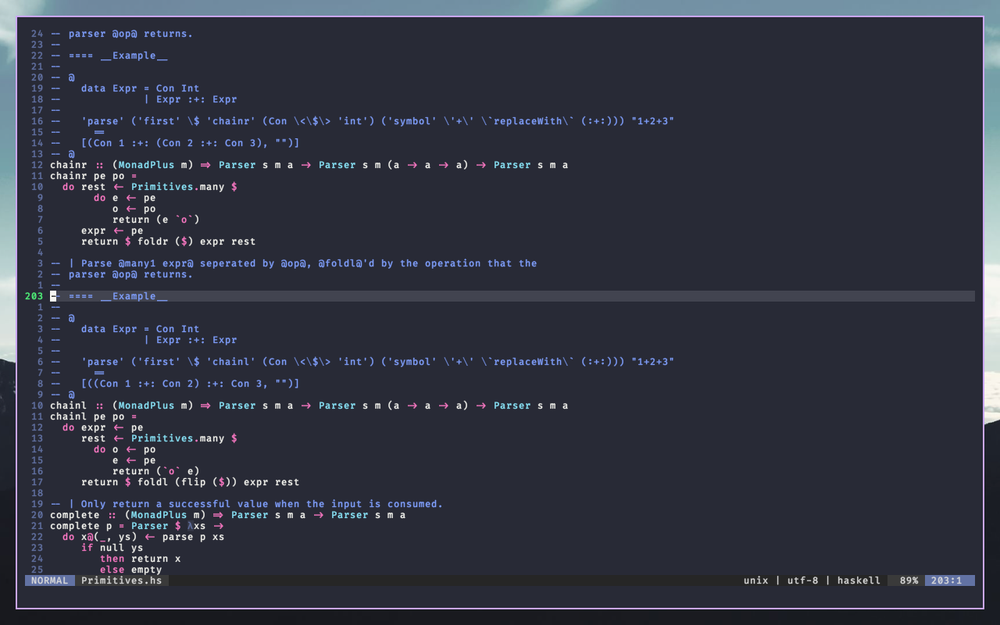
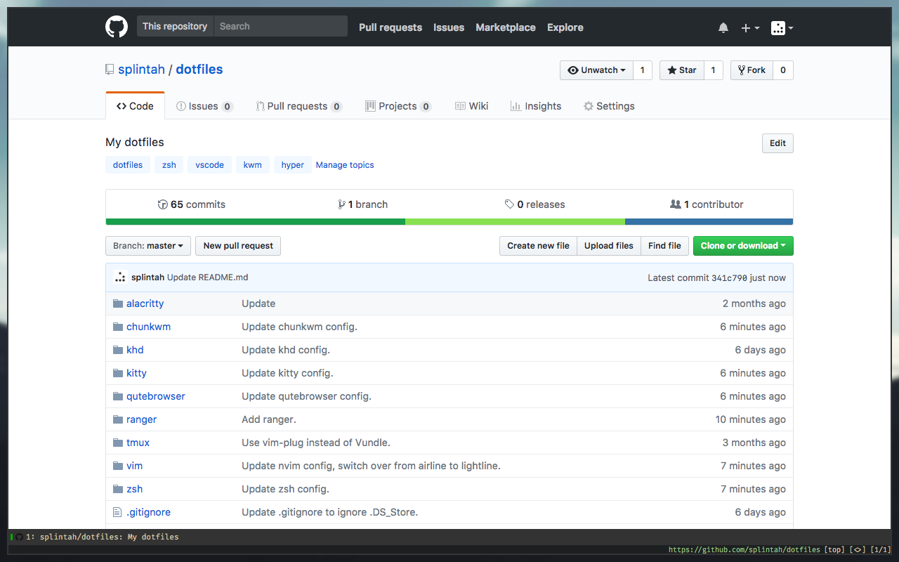
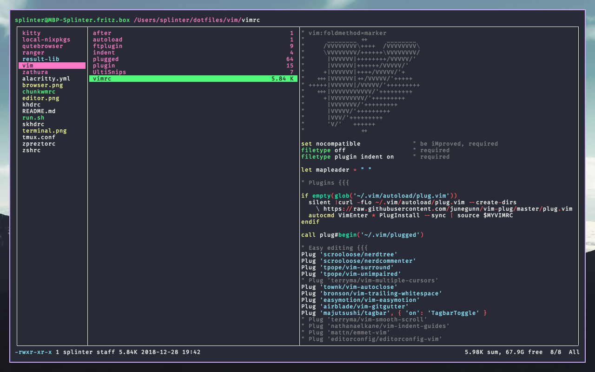
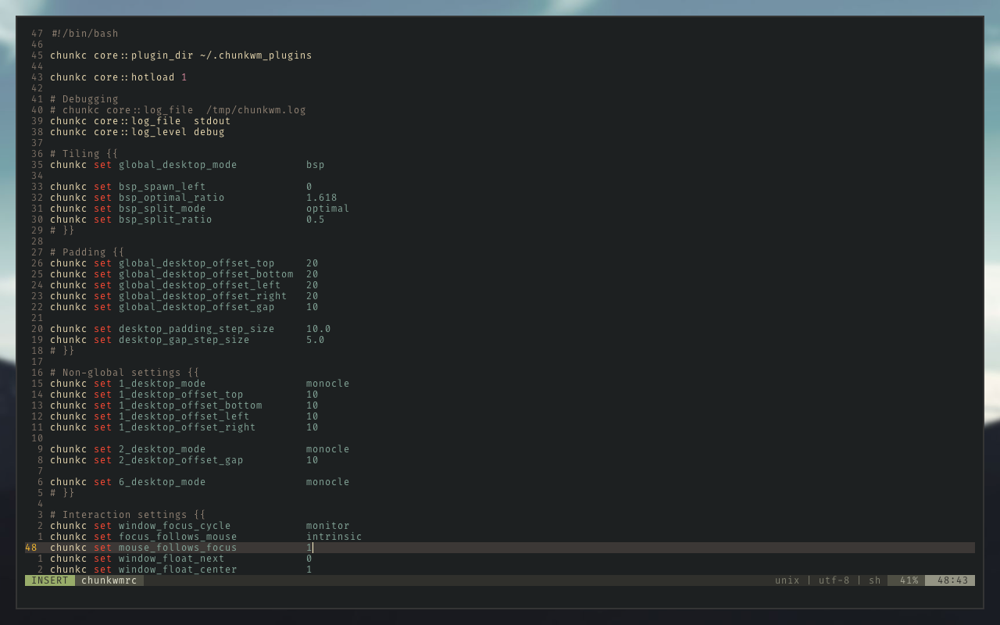

<h1 id="splintahs-dotfiles">splintah’s dotfiles</h1>
<p>   </p>
<h2 id="terminal">Terminal</h2>
<ul>
<li>Theme for zsh: my own, see <code>zshrc</code>.</li>
<li>Terminal emulator: <a href="https://github.com/kovidgoyal/kitty">kitty</a> by <a href="https://github.com/kovidgoyal">kovidgoyal</a></li>
<li>Font: <a href="https://github.com/tonsky/FiraCode">Fira Code</a> by <a href="https://github.com/tonsky">tonsky</a></li>
<li>Terminal theme: <a href="https://github.com/dracula/dracula-theme">Dracula</a></li>
</ul>
<h2 id="window-manager">Window manager</h2>
<ul>
<li><a href="https://github.com/koekeishiya/chunkwm">chunkwm</a> by <a href="https://github.com/koekeishiya">koekeishiya</a></li>
</ul>
<h2 id="editor">Editor</h2>
<ul>
<li>Neovim</li>
<li>Theme: <a href="https://github.com/dracula/dracula-theme">Dracula</a></li>
</ul>
<h2 id="browser">Browser</h2>
<ul>
<li><a href="https://qutebrowser.org">qutebrowser</a></li>
</ul>
<h2 id="file-manager">File manager</h2>
<ul>
<li><a href="https://ranger.github.io">ranger</a></li>
</ul>
